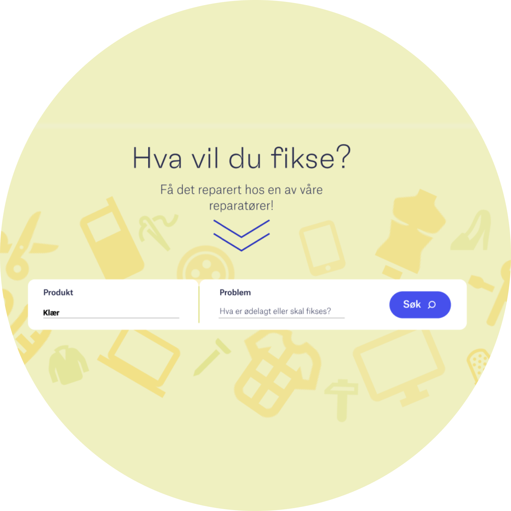

Fikse.co
Startup
Digitalisering
MVP
Fikse.co er en digital plattform som tilbyr reparasjon og tilpasning av klær.
Som UX-student jobbet jeg med å forbedre tjenesten og identifisere hvordan vi kunne skalere produktet. Fokus ble lagt på å støtte skredderne i brukerreisen.
Vi piloterte en MVP hos Høyer Paleet, hvor digitale prosesser ble introdusert til en ellers manuell tjeneste. Dette ga grunnlag for iterasjoner - noen ganger lykkes vi, andre ganger feilet.

Mapping av brukerreiser
Vi kartla hvordan tjenesten utspilte seg i praksis hos Høyer og mer generelt for å identifisere både friksjoner og muligheter i tjenesten.